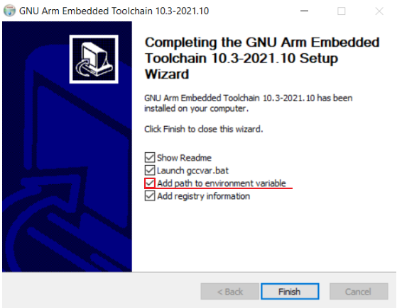
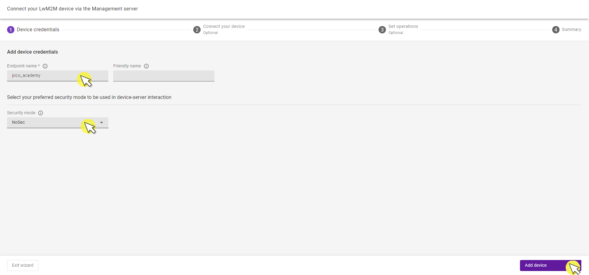
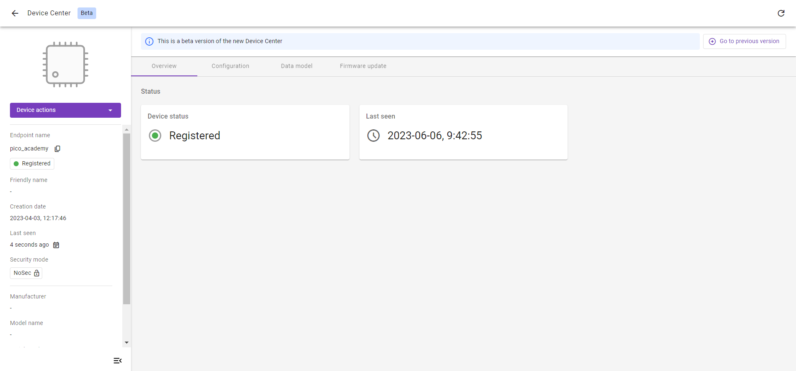

Exercise 1: Connect the Raspberry Pi Pico W to a LwM2M Server#
Lets start with the first exercise on building an end-to-end LwM2M application by running Anjay LwM2M Client on the Raspberry Pi Pico W, and connecting your device to Coiote IoT Device Management platform over WiFi.
Prerequisites#
- A Raspberry Pi Pico W board with a USB cable
- Git
- Access to a WiFi network
- Installed minicom (for Linux), RealTerm, PuTTy (for Windows), or another serial communication program.
- An active Coiote IoT DM user account.
Prepare binaries#
Install dependencies#
Configure and compile the LwM2M Client. To do so, you need to install some dependencies and clone three GitHub repositories: Anjay Client for the Raspberry Pi Pico W, the Raspberry Pi Pico W SDK, and the FreeRTOS kernel.
Start by creating a new workspace, installing the dependencies, and cloning all three GitHub directories into this workspace.
-
Create and open a new directory:
mkdir lwm2m-academy cd lwm2m-academy -
Install dependencies:
When using Ubuntu, run the following command:
sudo apt install cmake gcc-arm-none-eabi libnewlib-arm-none-eabi libstdc++-arm-none-eabi-newlibWhen using Fedora, run the following command:
sudo dnf install python3 cmake minicom arm-none-eabi-newlib arm-none-eabi-gcc-cs-c++ arm-none-eabi-gcc-cs arm-none-eabi-binutils-cs gcc-arm-linux-gnu gcc-c++-arm-linux-gnu gcc gcc-c++When using MacOS, run the following command:
brew install armmbed/formulae/arm-none-eabi-gccDownload and run the installer to install
arm-none-eabi-gccandarm-none-eabi-gdb.Select the default destination directory (E.g.
C:\GNU_Arm_Embedded_Toolchain).Check the
Add path to environment variableoption before you click theFinishbutton for the installation.
-
Clone three GitHub repositories using Git.
-
Clone the RPi Pico SDK repository and update its submodules
git clone -b 1.4.0 https://github.com/raspberrypi/pico-sdk.git cd pico-sdk/ && git submodule update --init && cd .. -
Clone the FreeRTOS kernel repository
git clone -b V10.5.0 https://github.com/FreeRTOS/FreeRTOS-Kernel.git -
Clone the Anjay-pico-client repository and update its modules
git clone https://github.com/AVSystem/Anjay-pico-client.git cd Anjay-pico-client && git submodule update --init --recursive && cd ..
-
Tip
Need help? Head over to the lwm2m-academy channel on Discord to get in touch with our experts.
Connect to the LwM2M Server#
Before connecting your device to the cloud, log in to Coiote IoT Device Management platform: eu.iot.avsystem.cloud.
Once logged in, select Device Inventory from the left-side menu

In the Device Inventory, click Add device.

Select the tile Connect your LwM2M device directly via the Management server.

In the Device Credentials step:
- Enter the Endpoint name. You can choose an endpoint name by yourself.
- As the Security mode, choose NoSec.

Click Add device and Confirm in the confirmation pop-up.
Click Go to Summary to find your Device Center view.
Compile the application#
Lets continue building the required files for the application. We are using NoSec mode where encryption and authentication are disabled and the data messages are passed in plain text over the network. In future exercises, well cover secure implementation in more detail.
Warning
Use the NoSec mode only for development, testing, and debugging purposes, never in production environments unless end-to-end security is provided on a lower layer (e.g. IPSec).
To start the compilation of the application, go to the Anjay-pico-client directory. Build the project with <ssid> and <pass> replaced with your WiFi network name and password respectively. The LwM2M Client Endpoint Name is configured using the <endpoint_name> parameter.
Note
A LwM2M Client is uniquely identified by an Endpoint Name. Use the Endpoint Name you created in the Connect to the Server section.
Create and open a directory called build:
mkdir build && cd build
cmake -DCMAKE_BUILD_TYPE=Debug -DWIFI_SSID="<ssid>" -DWIFI_PASSWORD="<pass>" -DENDPOINT_NAME="<endpoint_name>" ..
If youre using Windows, run the following command:
cmake -DCMAKE_BUILD_TYPE=Debug -DWIFI_SSID="<ssid>" -DWIFI_PASSWORD="<pass>" -DENDPOINT_NAME="<endpoint_name>" .. -G "MinGW Makefiles"
Open up the build directory and run the following command:
cmake --build . -j
It will generate directories that contain the .uf2 and .hex files. The .uf2 files can be programmed using the bootloader (e.g. drag-and-drop method) and .hex files can be loaded directly into the memory of the device using the rp2 tool.
In this example, we will use the .uf2 file.
Flash the board using the bootloader:#
To program the Raspberry Pi using the bootloader, press and hold the BOOTSEL button while connecting the device using a USB cable - it should be recognized as a Mass Storage device.
In the build/mandatory_objects directory, you will find the .uf2 file.
Copy the mandatory_objects.uf2 file to the Mass Storage device directory, and wait until the process finishes - copying the firmware image may take a while.
Check the logs#
With the board still connected to your PC, open a serial communication program (e.g. Minicom) and connect to the Raspberry Pi over a serial port. This will help you to validate if everything is working correctly.
Note
To open the serial port interface you need to check the name of the connected device and set the proper baud rate:
- Linux uses /dev/ttyACM[number] or /dev/ttyUSB[number] for a serial port device name.
- Windows uses COM[number] for a serial port device name.
- macOS uses /dev/tty.usbmodem[number] for a serial port device name.
Its important to set the correct baud rate, too. The baud rate is the number of symbols transferred in a communication channel per second and must be the same both on the serial communication program and on the board. The most common baud rates for serial ports are 9600 and 115200.
In exercises throughout the academy, we use 115200 baud, since its the default value used by Raspberry Pi Pico W.

Tip
Those logs may help figure out why the device didn't connect to the server (e.g. because of an incorrect WiFi password in the cmake command).
If all went well and logs show registration successful/registration successfully updated, you can go to Coiote IoT DM where the Registration status should show Registered.

Did you manage to connect the Raspberry Pi Pico W to the Coiote IoT Device Management platform?
Well done! Youve created your first LwM2M application
Data model view#
Click the Data model tab from the top menu.
In this view, we can see all LwM2M Object the device supports. As of now, there is only the LwM2M Server Object, more objects will be added in future exercises.

Provide your feedback
We're constantly working on improving the LwM2M Academy. Please share with us your feedback about this module so we can create an even better learning experience.